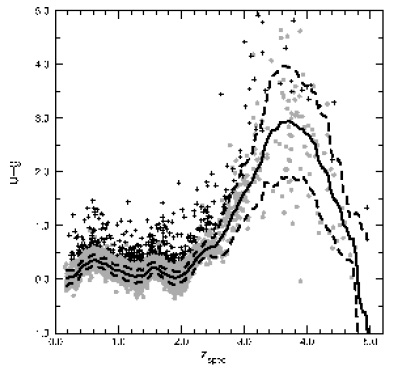
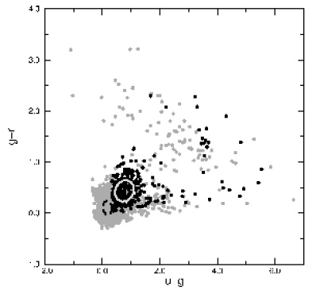

Home
| People | Partners
| VOStat | | StatCodes | Data & Tutorials | Events | Bibliographies

SDSS quasar datasetThe CASt datasetSDSS_quasar.datAstronomical background Most or all large galaxies have a massive black hole (MBH, 106-109 Mo solar masses) at the center. Gas from the interstellar medium or a disrupted star may fall onto the MBH through an accretion disk ("to accrete" means "to fall onto"). This accretion disk can become exceedingly hot and can eject a jet of material at relativistic (near the speed of light) velocities. The disk and jet radiate light across the electromagnetic spectrum (radio, infrared, visible, ultraviolet, X-ray, gamma-ray) with great efficiency. In most galaxies today, like our own Milky Way Galaxy, the MBH is starved of gas and little light is produced. In other galaxies, like Seyfert galaxies or radio galaxies, the light is very strong, particularly in spectral bands other than the visible band where the stars of the host galaxies emit most of their light. In rare cases called quasars, the light from the accreting MBH exceeds the starlight in all spectral bands by enormous factors. These are the brightest objects in the Universe and can be seen even at high redshifts (i.e. great distance from us). The spectrum, variability and (when resolved in telescopes) structure of quasars are studied in detail to understanding the complex processes of accreting MBHs and their environs. But an important subfield studies consist of wide-field surveys for quasars and characterize their bulk properties such as brightness in various spectral bands, redshifts, and luminosities. Such survey and photometric (brightness) studies lead to classification of quasar subtypes (e.g. Type I, Type II, radio-loud/radio-quiet, BAL, BL Lacs, Lyman-alpha dropouts), to measurement of the quasar luminosity function (distribution of luminosities), and to cosmic evolution studies (how the population changes with redshift). For many years, quasar surveys produced rather small samples of 101-103 objects. But the Sloan Digital Sky Survey (SDSS) (York et al. 2000) is performing a unique wide-field photometric and spectroscopic survey leading to a well-defined sample of 104 quasars with very precise photometric measurements in five visible bands and accurate redshifts. Some of these also have radio, infrared and X-ray detections from other surveys. The photometric properties from the first SDSS Data Release quasar catalog (Schneider et al. 2003) have been extensively discussed by Richards et al. (2002), Hall et al. (2002), Ivezic et al. (2002), Vignali et al. (2003), Reichard et al. (2003), Pindor et al. (2003), Richards et al. (2003), Pentericci et al. (2003), Zakamska et al. (2003), Wu et al. (2004), Fan et al. (2004), Hopkins et al. (2004), Weinstein et al. (2004), Richards et al. (2004), Collinge et al. (2005), Yip et al. (2005), Yahata et al. (2005), Zakamska et al. (2005), Chiu et al. (2005), Kitsionas et al. (2005), and Vanden Berk et al. (2005). The newer quasar catalog offered here is several times larger than the earlier one and has not yet been studied in detail. Below are two examples of multivariate relations that were found in the earlier dataset by Weinstein et al. (2004). The first shows the nonlinear relationship between the (u_mag - g_mag) color index and redshift. The second shows the non-Gaussian distribution of quasars in the (g_mag - r_mag) vs. (u_mag - g_mag) color-color plot.  
Dataset The SDSS team has recently
produced a catalog of 46,420 quasars from its 3rd Data Release, 95% of
them previously
unknown. The development of the catalog is presented by Schneider et al. (2005).
The dataset offered here is called SDSS_quasar.dat
has all 46,420 rows but omits some technical columns. The 23 columns
included are:
Statistical exercises
The serious student of this database should examine the
papers
referenced above. Following are some issues that might be
examined:
For further information on the
SDSS
quasar dataset and astrophysical interpretation of its structure,
please contact
Daniel Vanden Berk (Penn
State University) |
    |